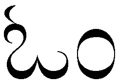
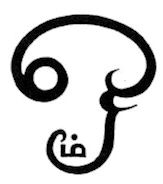
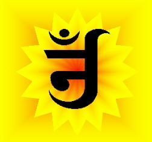
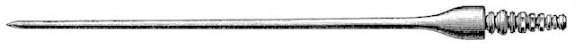
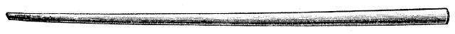

mailto:payer@payer.de
Zitierweise | cite as:
Payer, Alois <1944 - >: Sanskritkurs. -- 8. Lektion 8. -- Fassung vom 2009-01-28. -- URL: http://www.payer.de/sanskritkurs/lektion08.htm
Erstmals hier publiziert: 2008-11-22
Überarbeitungen: 2009-01-28 [Ergänzungen]; 2008-11-24 [Ergänzungen]
Anlass: Lehrveranstaltungen 1980 - 1984
©opyright: Dieser Text steht der Allgemeinheit zur Verfügung. Eine Verwertung in Publikationen, die über übliche Zitate hinausgeht, bedarf der ausdrücklichen Genehmigung des Verfassers
Dieser Text ist Teil der Abteilung Sanskrit von Tüpfli's Global Village Library
Falls Sie die diakritischen Zeichen nicht dargestellt bekommen, installieren Sie eine Schrift mit Diakritika wie z.B. Tahoma.
Die Devanāgarī-Zeichen sind in Unicode kodiert. Sie benötigen also eine Unicode-Devanāgarī-Schrift.
In der traditionellen indischen Grammatik unterscheidet man bei den Suffixen, mit denen Nominalstämme gebildet werden:
| Schema: Wurzel + kṛt-Suffix » Nominalstamm usw. + taddhita-Suffix » neuer Nominalstamm usw. Nominalstamm + Kasusendung » syntaxfähiges Nomen |
Einteilung nach dem Ablaut:
| Das kṛt-Suffix -a bildet maskuline (seltener neutrale) Substantive, die eine Handlung oder einen Zustand bezeichnen, der durch die Wurzel bezeichnet wird; manchmal auch Adjektive oder Substantive, die den Agens (kartṛ) der von der Verbalwurzel bezeichneten handlung ausdrücken. Für kurze Penultima (= Vokal vor Konsonant, auf den die Wurzel auslautet) oder auslautenden Wurzelvokal wir meist Hochstufe (guṇa) oder Dehnstufe (vṛddhi) substituiert. |
Beispiele:
| Wurzel | + -a (kṛt) |
|---|---|
| ji 1 P "siegen" जि |
jaya m. "das Siegen, der Sieg" जय |
| muh 4 P "verwirrt sein" मुह् |
moha m. "Verwirrung, Verblendung, Irrtum" मोह |
| krudh 4 P "zürnen" क्रुध् |
krodha m. "Zorn" क्रोध |
| kup 4 P "zürnen" कुप् |
kopa m. "Zorn" कोप |
| lubh 4 P "begehren" लुभ् |
lobha m. "Begierde" लोभ |
| labh 1 Ā "bekommen" लभ् |
lābha m. "das Bekommen, Gewinn" लाभ |
| sṛj 6 P "loslassen, emanieren lassen" सृज् |
sarga m. "das Loslassen, die Emanation, die
Schöpfung" (zum Wortsandhi j » g siehe später) सर्ग |
| śru 5 P "hören" श्रु |
śrava m. "das Hören" श्रव |
| bhū 1 P "werden, sein" भू |
bhāva m. "das Werden, das (etwas) Sein, Natur,
Charakter" भाव |
| yudh 4 Ā "kämpfen" युध् |
yodha m. "Kämpfer, Krieger, Soldat" योध |
| Das kṛt-Suffix -ana bildet meist neutrale Substantive, die eine Handlung, einen Zustand oder das Mittel bzw. Werkzeug bezeichnen, durch welches die von der Wurzel oder einem Verbalstamm bezeichnete Handlung zustande gebracht wird. Für eine kurze Penultima oder einen auslautenden Vokal der Wurzel wird gewöhnlich Hochstufe (guṇa) substituiert. |
Beispiele.
| Wurzel | + -ana (kṛt) |
|---|---|
| gam 1 P "gehen" गम् |
gamana n. "das Gehen" गमन |
| nī 1 U "führen" नी |
nayana n. "(das Werkzeug des Führens, d.h.)
Auge" नयन |
| śru 5 P "hören" श्रु |
śravaṇa n. "(Hörwerkzeug =) Ohr" श्रवन |
| kṛ 8 U "tun" कृ |
kāraṇa n. "(das, wodurch etwas getan wird, d.h.)
Ursache, Grund" कारण |
| bhū 1 P "werden" भू |
bhavana n. "das Werden, Entstehen" भवन |
| dṛś 4 P "sehen" दृश् |
darśana n. "das Sehen, Sichtweise,
philosophisches System, Erscheinung, speziell: Darśan" दर्शनस् |
Abb.: Maa Batakali Darshan, Puri, Orissa
[Bildquelle: savia. --
http://www.flickr.com/photos/savia/383440967/. -- Zugriff am 2008-11-22. --

 Creative
Commons Lizenz (Namensnennung, keine kommerzielle Nutzung, keine Bearbeitung)]
Creative
Commons Lizenz (Namensnennung, keine kommerzielle Nutzung, keine Bearbeitung)]
"Darshan oder Darshana ist ein Begriff aus dem Hinduismus für die Sicht und Vision des Heiligen und Göttlichen. Unter Darshana wird z.B. das offizielle Treffen von Schüler und Meister verstanden, bei dem der Schüler vom Meister geladen wurde. Es kann aber auch das sich Versenken beim Betrachten eines Götterbildes bedeuten. Letztere Bedeutung ist diejenige, die im heutigen Sprachgebrauch des Hindi die häufigste ist. Im Zusammenhang mit Mata Amritanandamayi bedeutet Darshan die Umarmung durch den Guru. Fromme Hindus gehen in den Tempel um die Sicht Gottes durch ein Symbol oder eine Statue, in der die geistige Anwesenheit der Gottheit angenommen wird, zu erlangen. In diesem Sinne auch eine Segnung durch die Gottheit. Darshan kann jedoch auch durch eine Vision der Gottheit bei Gebet oder der Meditation empfangen werden. Auch eine lebendige Person, die als Inkarnation der Gottheit angesehen wird, wie z. Bsp. ein Avatara, kann Darshan geben."
[Quelle: http://de.wikipedia.org/wiki/Darshan. -- Zugriff am 2008-11-22]
| Das kṛt-Suffix -tra bildet (meist) neutrale Substantive, welche das Mittel oder Werkzeug bezeichnen, durch welches die von der Wurzel bezeichnete Handlung zustande kommt. Kurze Penultima und auslautender Vokal der Wurzel wird durch Hochstufe (guṇa) ersetzt. |
Beispiele:
| Wurzel | + -tra (kṛt) |
|---|---|
| nī 1 U "führen" नी |
netra n. "(Mittel des Führens =) Auge" नेत्र |
| śru 5 P "hören" श्रु |
śrotra "(Hörwerkzeug=) Ohr" श्रोत्र |
| man 4 Ā "denken" मन् |
mantra m. (!) "(Denkwerkzeug:)
Spruch, 'magische' Formel (Mantra)" मन्त्र |
| tan 8 U "aufspannen" तन् |
tantra n. "Webkette" तन्त्र |
|
|
|
|
 |
 |
|
|
 |
| [Bildquelle für alle Oṃs: Wikipedia, Public domain] | |
| Das kṛt-Suffix -ti bildet feminine Substantive, die im Allgemeinen die von der Wurzel bezeichnete Handlung oder den von der Wurzel bezeichneten Zustand ausdrückt. Die Form der Wurzel ist tiefstufig. |
Beispiele:
| Wurzel | + -ti (kṛt) |
|---|---|
| śru 5 P "hören" श्रु |
śruti f. "das Hören, der Veda" श्रुति |
| smṛ 1 P "vergegenwärtigen" स्मृ |
smṛti f. "Das Vergegenwärtigen,
Erinnerung, Überlieferung, Achtsamkeit" स्मृति |
| nī 1 U "führen" नी |
nīti f. "das Führen, Führung, Betragen" नीति |
| sṛj 6 P "emanieren lassen" सृज् |
sṛṣṭi f. "Emanation, Schöpfung" सृष्टि |
| dṛś 4 P "sehen"स् दृश् |
dṛṣṭi f. "Blick, Gesicht, Sehweise" (zum
Wortsandhi siehe später) दृष्टि |
| gam 1 P "gehen" गम् |
gati f. "Gang, Laufbahn, Ziel des
Gehens" (aus *gm » ga + -ti) गति |
| man 4 Ā "denken" मन् |
mati f. "Denken, Gedanke, Meinung" (aus
*mn » ma + -ti) मति |
* Anmerkung: * vor einer Form bedeutet, dass diese Form im Sanskrit nicht vorkommt, sondern theoretisch erschlossen ist als Voraussetzung für eine bestimmte Bildung. Die Tiefstufe von gam ist gøm = *gm, das m wird als sogenannte nasalis sonans durch a ersetzt » ga; Analoges gilt für man » ma.
| Die taddhita-Suffixe -tva n. bzw. -tā f. bilden abstrakte Substantive zu Nomina. Die Form des zugrundeliegenden Nominalstamms bleibt unverändert. |
Beispiele:
| Noinalstamm | + -tva n. (taddhita) | + tā f. (taddhita) | Bedeutung |
|---|---|---|---|
| guru 3 "schwer, würdig, m. Meister" गुरु |
gurutva n. गुरुत्व |
gurutā f. गुरुता |
"Schwere, Ehrwürdigkeit, Das Lehrersein (Wesen oder Natur eines Lehrers) |
| brāhmaṇa m. "Brahmane" ब्राह्मण |
brāhmaṇtva n. ब्राह्मणत्व |
brāhmaṇatā f. ब्राह्मणता |
"das Brahmane-sein, was einen Brahmanen zum Brahmanen macht, Wesen / Natur eines Brahmanen" |
| deva m. "Himmlischer, Gott" देव |
devatā f. देवता |
"Gottheit" |
Diese beiden Bildungen können praktisch zu jedem Nomen gebildet werden. Sie sind in wissenschaftlichen Sanskritwerken sehr häufig.
Stammbildung:
Beispiel: tan 5 U तन् "dehnen"
|
Anmerkung: Zum Streit, ob tan nicht eigentlich eine Wurzel der 5. Präsensklasse ist -- *tn » ta + no- -- vgl. Thumb-Hauschild, Handbuch des Sanskrit II, 265.
Die wichtigste Wurzel, die zur 8. Präsensklasse zählt, ist kṛ 8 U "tun, machen". Ihre Konjugation ist ziemlich unregelmäßig:
kṛ 8 U "machen tun"
|
Lernen Sie folgende Wörter:
ji 1 P (jayati) जि जयति : siegen, besiegen, ersiegen
labh 1 Ā (labhate) लभ् लभते : fassen, erhalten, ergreifen
tu तु : aber (steht nach dem ersten Wort des entgegengesetzten Satzes oder Satzteils)
paś 4 P (paśyati) पश् पश्यति : sehen, erblicken (wird als Präsensstamm statt der Wurzel dṛś 0 "sehen, erblicken" verwendet)
kṛ 8 U (karoti) कृ करोति : machen, tun
tan 8 U (tanoti) तन् तनोति : dehnen
rakṣ 1 P (rakṣati) रक्ष् रक्षति : hüten
sārathi m. सारथि : Wagenlenker, Fuhrmann
kapi m. कपि : Affe
kumārī f. कुमारी : das Mädchen, die Jungfrau
nāga m. नाग : der Nackte, der Elefant, die Schlange (Elefant und Schlange haben kein Fell, ebenso wie der "nackte Affe" Mensch)
gaja m. गज : Elefant
śuc 1 P (śocati) शुच् शोचति : trauern
śuka m. शुक : Papagei
pat 1 P (patati) पत् पतति: fallen, fliegen
patrikā f. पत्रिका : Brief
likh 1 P (likhati) लिख् लिखति: ritzen, schreiben (ursprünglich mit dem Stichel auf einem Palmblatt, dann aber allgemein)

Abb.: लिख् : Indischer Schreibgriffel aus Stahl zum Einritzen
in Palmblätter
[Bildquelle: Meyers Großes Konversationslexikon 1905. Gemeinfrei]

Abb.: लिख् : Schreibstöckchen der Batak (Sumatra), wie es
vermutlich auch in Indien gebräuchlich war
[Bildquelle: Meyers Großes Konversationslexikon 1905. Gemeinfrei]
sukha n. सुख : Glück, Wohlsein
duḥkha n. दुःख : Unglück, Leid
A) Erklären Sie die folgenden Nomina durch Angabe der Wurzel, von der abgeleitet wurde, und des Nominalsuffixes. Geben Sie Geschlecht und Bedeutung an:
1. lobha
2. rakṣa
3. śrotra
4. mati
5. savana
6. yodha
7. lābha
8. kāraṇa
9. gati
10. khādana
11. smara
12. sṛṣṭi
13. tantra
14. bhāva
15. darśana
16. netra
17. veśana
18. kopa
19. sarga
20. yajana
21. moha
22. śrava
23. bhavana
24. nīti
25. nartana
26. jaya
27. nayana
28. śravaṇa
B) Bilden Sie Abstrakta zu allen bisher gelernten Nomina und überlegen Sie deren Bedeutung (mündlich)
C) Setzen Sie als direktes Objekt im Singular und Plural ein:
kṣatriyas ... rakṣati (brāhmaṇa, vaiśya, śūdra, brāhmaṇī, kṣatriyā)
D) Übersetzen Sie
1. Kṣatriyas behüten sowohl Brahmanen als auch Vaiśyas und Śūdras. (2 Möglichkeiten)
2. Ein heiliger Mann sieht sowohl Himmel als auch Höllen.
3. Er besiegt Kṣatriyas.
4. Sie spannt die Webkette auf.
5. Soldaten kämpfen.
6. Der Brahmane macht ein Feuer.
7. Brahmanen machen Feuer.
8. Was tun diese Kämpfer?
9. Wen sieht das Auge?
10. Was begehren Götter?
11. Was ist der Grund?
1. शूद्रो बालं नयति |
2. कविर्देवं यजते |
3. साधुः फलानि खादति |
4. गुरुः क्रोधं जयति |
5. देवो नरकं सृजति |
6. धेनुर्ग्रामं विशति |
7. कामक्रोधलोभा नरकं नयन्ति |
8. देवतां यजति |
9. बाला भवति |
10. सारथी रथं नयति |
11. कपयः फलानि खादन्ति |
12. बाला लिखति |
13. कुमारी गृहं विशति |
14. देवो नागं सृजति |
15. बालो गजं नयति |
16. विमला शोचति | (विमला Eigenname Vimalā)
17. शुकः पतति |
18. बालः पत्रिकां लिखति |